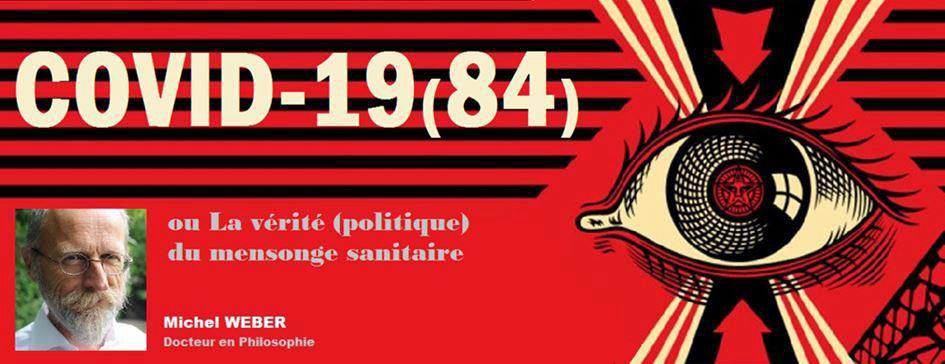

Covid-19(84) ou La verité (politique) du mensonge sanitaire
par Michel WEBER

L’événement Covid-19 a déjà fait couler beaucoup d’encre. Tout et son contraire ont été affirmé, parfois par les mêmes personnes, et au même moment. Démêler l’écheveau nécessite donc de simplifier le récit. Il y a bien sûr un prix à payer pour ce faire ; il est double. D’une part, il faut ignorer ce qui semble accessoire ; d’autre part, il importe de remettre l’événement dans son contexte historique, à la fois au sens perspectif (la crise culturelle qui remonte à 1968) et projectif (les conséquences politiques immédiates).
Pour l’essentiel, on trouvera ici une thèse — la crise de la Covid-19 n’est pas sanitaire mais politique, et aucune des mesures liberticides n’est fondée scientifiquement — soutenue par trois arguments :
1. La Covid-19 rend évidente la corruption complète du corps politique et de ses appendices médiatiques et scientifiques. Ils ont définitivement perdu toute légitimité et toute autorité.
2. Cette corruption reflète la crise du capitalisme financier, et la volonté des oligarques de détruire la démocratie représentative.
3. Le système politique qui se met en place est totalitaire, c’est-à-dire que toutes les facettes de la vie des citoyens seront pilotées par une structure idéologique mortifère ne différenciant plus les sphères privées et publiques. Ce totalitarisme sera fasciste et numérique.
Le grand récit qui nous est officiellement proposé est bien synthétisé par Wikipédia : « la maladie à coronavirus 2019, ou Covid-19, est une pandémie d’une maladie infectieuse émergente provoquée par le coronavirus SARS-CoV-2. Elle apparaît le 17 novembre 2019 dans la ville de Wuhan, puis se propage dans le monde entier ».
Pour l’expliquer, on incrimine le pangolin et la barbarie diététique locale. L’Organisation mondiale de la santé (OMS) prononce l’état d’urgence de santé publique internationale le 30 janvier 2020. Elle déclare l’épidémie de Covid-19 « pandémique » le 11 mars 2020, et demande des mesures exceptionnelles (l’état d’urgence sanitaire) pour prévenir la saturation des services de soins intensifs et renforcer l’hygiène préventive (suppression des contacts physiques, des attroupements et des manifestations, ainsi que des déplacements et voyages non indispensables, promotion du lavage des mains, mise en application de quarantaine, etc.).
Il faudrait prendre le temps de (re)définir ce que sont une épidémie, une pandémie, un virus émergent, les conditions d’une zoonose (de transmission d’un pathogène entre espèces), un virus augmenté (ou « Frankenvirus »), les « gains de fonction », les présupposés des modèles d’analyse de risque (à commencer par la distribution d’âge rectangulaire et stationnaire, et le mélange homogène de la population), etc. Et de rappeler qu’un virus ne peut jamais être à la fois très dangereux et très contagieux. Discussion compliquée par le fait que les experts peinent à argumenter entre eux et avec le grand public.
Par contre, on peut facilement constater la faillite complète de la gestion politique de la crise. Il existe des variations par pays, mais — la Chine mise à part —, ce sont les similitudes qui sont frappantes. Il pourra suffire d’explorer ici les trois facettes annoncées : la corruption des corps politique, médiatique et scientifique ; la crise du capitalisme biocidaire ; et le totalitarisme fasciste numérique.
1- La corruption des corps politique, médiatique et scientifique
« Les faits ne pénètrent pas dans le monde où vivent nos croyances, ils n’ont pas fait naître celles-ci, ils ne les détruisent pas ; ils peuvent leur infliger les plus constants démentis sans les affaiblir, et une avalanche de malheurs ou de maladies se succédant sans interruption dans une famille ne la fera pas douter de la bonté de son Dieu ou du talent de son médecin. » (Proust 1913)
La gestion politique ubuesque de l’épidémie peut se définir par cinq traits.
1.1. L’impréparation : le gouvernement a été complètement pris au dépourvu, alors que la réaction de la Chine, connue de tous dès janvier, avait été prompte et radicale. En bref : les autorités chinoises ont réagi comme s’il s’agissait d’une attaque bactériologique, pas d’une épidémie saisonnière (et personne n’a jusqu’ici apprécié toutes les implications de cette réaction). De plus, les scénarios de pandémie sont très répandus depuis une douzaine d’années, surtout après la crise de 2009 (H1N1), et ce tout spécialement chez les militaires et dans les fondations privées, grâce au zèle de B. Gates, qui en a fait son unique cheval de bataille philanthropique depuis 2007. Cette impréparation est sans nul doute possible le résultat de cinquante ans de néo-libéralisme. Mais pas que.
1.2. L’incompétence des uns et l’expertise des autres : alors que la chose politique est abandonnée aux universitaires, ceux-ci ne sont que très rarement à la hauteur de la tâche qui leur est dévolue, et ils se contentent de travailler à la prolongation de leur mandat. Du reste, dans une technocratie qui ne dit pas son nom, on comprend la nécessité de s’en remettre aux experts, dont l’objectivité est proverbiale.
En fait, l’incompétence, c’est-à-dire l’absence d’expertise adéquate, ne devrait être aucunement problématique en politique : seul le sens commun devrait importer. S’il faut être un expert pour gouverner, nous ne sommes plus en démocratie (représentative), ou même en particratie (pas représentative), mais en technocratie. Le recours aux experts est donc intrinsèquement problématique. Il l’est d’autant plus qu’il suffit de connaître l’employeur de l’expert, ou son bailleur de fonds, pour déduire par avance la nature de ses conclusions.
1.3. La corruption : le niveau de corruption des acteurs politiques est un secret de polichinelle. On se permet même, dans notre monarchie bananière, de rire sous cape des malversations qui finissent par être médiatisées dans d’autres pays, de préférence situés plus au Sud. (Et cela vaut bien sûr pour le regard que la Flandre porte sur la Wallonie.)
On le sait depuis Platon (ce sont les Grecs qui ont créé la démocratie participative) et, plus particulièrement, depuis Machiavel (1532), le pouvoir est recherché par les corrompus en puissance, et exercé par des corrompus de fait. Du reste, répétons-le, les conclusions de l’expert se trouvent en germe dans la source de financement de ses études.
1.4. La coercition en toute illégalité. L’imbroglio gouvernemental et institutionnel belge a donné naissance à un fort curieux proto-totalitarisme : un gouvernement en affaire courante s’est octroyé les pouvoirs spéciaux pour euthanasier le législatif, instrumentaliser le judiciaire, et instaurer un État d’urgence (sanitaire) qui ne dit pas son nom. Les mesures et règlements liberticides ne se comptent plus — à commencer par le confinement dans les maisons de repos, la généralisation du confinement à domicile, la distanciation « sociale », le port du masque, etc.
Avec ce cortège de mesures liberticides, illégitimes, inefficaces et illégales, on obtient, de fait, la fin de l’État de droit. Le bien public est devenu privé, c’est-à-dire source de profit. Et l’intimité de la sphère privée est exposée au regard (parfois à la vindicte) de tous.
1.5. La communication, et particulièrement sa composante absurde, constitue la vraie signature de cette crise, durant laquelle les responsables politiques ont épuisé toutes les formes pathologiques du langage. Épinglons les suivantes :
- l’évitement : ignorer les objections, refuser le dialogue sous quelque forme que ce soit ;
- l’indignation : faire l’innocent, plaider la bonne foi, le dévouement au bien commun ;
- le mensonge pur et simple : le masque protège des virus et pas seulement des infections bactériennes ;
- le vaccin est efficace contre une maladie qui n’est pas immunisante ;
- la censure : refuser l’accès à une information ou à une conférence de presse ;
- la propagande : gonfler de vraies informations ;
- la désinformation : propager de fausses informations ;
Sibeth Ndiaye, porte-parole du gouvernement français : « Les Français ne pourront pas acheter de masques dans les pharmacies, car ce n’est pas nécessaire si on n’est pas malade » Sibeth Ndiaye, porte-parole du gouvernement, BFMTV, 17 mars.- l’usage de la contradiction : soutenir deux propositions contradictoires (le masque est inutile ; vous devez porter un masque) ;
- l’usage du paradoxe : utiliser des énoncés indécidables tels que : l’épidémie progresse sans empirer ; le monde d’après sera, et ne sera pas, différent ; seuls, ensemble ; soyez solidaires (dans la solitude) ; faites confiance aux responsables (!) ; informez-vous (dans les médias) ; vaccinons tout le monde pour contrôler la démographie ; imposons la monnaie digitale pour permettre aux pauvres d’épargner ; instaurons un gouvernement mondial démocratique ; ce que je vous dis est faux… Tout ceci ressort de l’effort pour rendre l’autre fou (Searles 1959).
En somme, la communication gouvernementale, servilement relayée par les médias et aiguillée (et endossée) par les experts en sciences médicales, a entretenu la peur et, surtout, l’angoisse. La peur est un sentiment naturel positif car mobilisateur : face à une menace palpable, l’individu réagit par la fuite ou le combat. Au contraire, l’angoisse est paralysante : on pressent une menace invisible, sans savoir comment réagir…
La communication absurde vise à stupéfier par l’angoisse, pas à perdre par la peur. Le dispositif est beaucoup plus efficace : la peur demande à être orientée afin qu’elle ne nuise pas au statu quo social ; l’angoisse paralyse les citoyens qui acceptent passivement tout ce qui leur est imposé.
Edouard Philippe, Premier ministre, « Le port de masque, en population générale dans la rue, ça ne sert à rien », TF1, 13 mars.La banqueroute politique signale en outre deux faillites supplémentaires : celle des médias et celle des experts scientifiques, et tout particulièrement des médecins. Les médias ont donné une ampleur inouïe à la communication absurde des politiques et des scientifiques. Il y a eu cooptation des uns par les autres. On peine à trouver un dissident dans la classe politique ; il en existe peu dans le monde scientifique et, s’ils s’expriment dans les médias, c’est généralement de manière très pondérée ; rares sont les journalistes qui ont fait leur travail, Alexandre Penasse constituant une notable exception.
Tous se sont couverts d’ignominie en participant, activement ou passivement, à cette mascarade ; tous devraient se voir sévèrement sanctionner.
2- La crise du capitalisme biocidaire
« C’est le commencement qui est le pire, puis le milieu, puis la fin ; à la fin, c’est la fin qui est le pire » (Beckett 1953)
En amont de cette sclérose politique, médiatique et scientifique, on trouve l’influence des mondes bancaire et pharmaceutique, qui sont mus par deux perspectives : d’une part, la maximisation de leur emprise sur la société (et donc de leur chiffre d’affaire) ; d’autre part, la gestion de la crise globale systémique annoncée clairement dès 1968, et dont la chronologie a été esquissée en 1972 par Meadows et Kukla (l’épuisement des ressources, le dérèglement climatique, et la progression de la pollution finiront par avoir raison de la société de consommation et de la démocratie représentative).
2.1. De ce point de vue, l’utilisation de la stratégie du choc, identifiée par Klein en 2007 — instrumentaliser une crise réelle ou ressentie, naturelle ou culturelle, afin de modifier profondément l’espace social, tandis que celui-ci est paralysé — s’impose comme une évidence si on veut anticiper le chaos. Que la crise soit réelle, ou simplement mise en scène, que son origine soit naturelle, ou le produit d’une machination, ne change finalement pas grand-chose au traumatisme et à la possibilité de son usage.
2.2. Par contre, il faut comprendre, une fois pour toutes, que les élus ne représentent pas le peuple, mais les oligarques et leurs multinationales. Le programme néolibéral est en effet très simple : dissoudre les États afin de privatiser toutes leurs fonctions. Tant qu’un gouvernement mondial (privatisé) n’est pas implémentable, on peut se contenter de transformer les États en coquilles vides. Ce programme ne constitue qu’une réappropriation du fascisme tel que Mussolini l’a défini, et mis en pratique, dès 1922-1925, à l’aide de la vision économique de Vilfredo Pareto : l’entreprise privée est, par définition, beaucoup plus efficace que l’État. Puis vinrent les politiques similaires des Nazis en 1934–1937, qui subirent une légère obsolescence de 1944 à 1972 (les « trente glorieuses »).
En fait, Hayek, le chantre du néolibéralisme, stipule très clairement, et ce dès 1944, la stratégie à adopter : seule une infiltration progressive des institutions civiles et politiques permettra la destruction de la menace communiste et de sa cinquième colonne. Vingt ans plus tard, le 30 septembre 1965, il arriva à ses fins avec le coup d’État de Suharto, qui coûta la vie à plus d’un million de communistes (certains parlent de 3 millions d’exécutions arbitraires), et permit une première mise en place du dispositif néolibéral. C’était en quelque sorte la répétition du renversement d’Allende par Pinochet, perpétré le 11 septembre 1973.
Suharto, photographié en 1965
Le remplacement des gouvernements par des multinationales a été quantifié très tôt, e. a., par Stephen Hymer (1960) et David C. Korten (1995). Il est devenu évident avec la politique d’intégration européenne et, surtout, la multiplication des traités et autres partenariats transatlantiques de commerce et d’investissement (comme le « Transatlantic Trade and Investment Partnership »).
C’est du reste le fil rouge de la littérature « cyberpunk » dont le représentant le plus fameux est sans doute Ph. K. Dick (1955), qui a offert les scénarios de Blade Runner (1982), Total Recall (1990), Minority Report (2002), etc.
2.3. Tout se joue donc en 1968–1973 : le dévoilement des enjeux civilisationnels comme leur effacement, c’est-à-dire, d’une part, la prise de conscience de la crise globale qui ne pourrait être conjurée qu’en renonçant au capitalisme industriel et financier ; et, d’autre part, la reprise en main de l’agenda politique par ce dernier avec des figures telles que Suharto et Pinochet, puis M. Thatcher (1979), R. Reagan (1981) et Helmut Kohl (1982). (Il faudrait également mentionner le travail de sape de Pompidou, élu à la présidence française en 1969, et le bref espoir instillé par Sicco Mansholt à la Commission européenne en 1972–1973.)
3- Le totalitarisme fasciste numérique
« Si vous désirez une image de l’avenir, imaginez une botte piétinant un visage humain…
éternellement. » (Orwell 1949)
En amont de la corruption complète du corps politique et de ses appendices médiatiques et scientifiques, nous avons trouvé la crise du capitalisme financier et la volonté des oligarques de remodeler en profondeur la démocratie (représentative) de marché. En aval, nous découvrons, sans surprise, un nouveau totalitarisme fasciste, bien plus pernicieux que ses ancêtres du XXe siècle, car numérique.
3.1. « Totalitarisme » désigne le système politique qui prétend gérer toutes les dimensions de la vie citoyenne, publiques comme privées. Rien ne doit lui échapper, en droit comme en fait. Le « fascisme » est un totalitarisme de droite, c’est-à-dire conçu par, et pour, les oligarques.
3.2. L’histoire du totalitarisme fasciste est supposée connue ; elle se résume à la prise de pouvoir des oligarques industriels et financiers par l’intermédiaire d’un lampiste plus ou moins allumé (ce qui permet aux commanditaires de tirer leur épingle du jeu si l’affaire tourne mal). À partir de 1921, la droite extrême progresse partout en Europe : en Italie (Mussolini accède au pouvoir en 1922), en France (avec la création en 1922 de la Synarchie, suivie plus tard par la Cagoule), en Allemagne (le Nationalsozialistische Deutsche Arbeiterpartei, en gestation depuis 1918, s’organise en 1920 ; Hitler écrit Mein Kampf en 1924 ; il est publié en 1925), Salazar assied sa dictature en 1932–1933, et Franco pilote la guerre civile déjà en 1934. De 1967 à 1974, il y aura aussi la dictature des colonels en Grèce. (Voir, par exemple, Lacroix-Riz 2006)
3.3. Nous sommes dans une configuration totalitaire depuis déjà de longues années, c’est-à-dire qu’un système, qu’une idéologie, prétend gérer tous les aspects de la vie : la technoscience constitue un tel système ; le capitalisme, renommé néolibéralisme, est un tel système ; la globalisation est un tel système ; l’État d’urgence permanent qui s’enracine dans la guerre contre la terreur datant de 2001 en est la dernière péripétie.
La vraie-fausse crise sanitaire de 2020 est le prétexte (au sens de N. Klein) utilisé pour dépouiller définitivement les peuples des acquis sociaux et politiques concédés après 1945. Elle touche donc différemment les pays selon qu’ils sont développés ou pas. Dans les pays riches, il s’agit de détruire les acquis sociaux et de mettre la population au pas ; dans les pays pauvres, c’est une logique néocoloniale qui est à l’œuvre. C’est ainsi, alors que l’épidémie saisonnière est finie, que des règlements (de plus en plus) absurdes prolongent la terreur sécuritaire.
3.4. Au nombre des outils pour comprendre les enjeux du totalitarisme numérique, on trouve les concepts de conformisme et d’atomisme, qui s’imposent dès les débuts de la révolution industrielle et de la démocratie représentative, et sont esquissés chez Saint-Simon (1803) et Tocqueville (1835).
L’ère thermo-industrielle est celle du machinisme, c’est-à-dire de la standardisation des produits et de l’organisation scientifique du travail. Alors que l’outil dépend de la morphologie humaine, la machine demande à l’ouvrier de s’adapter à son mécanisme. Le pouvoir de la machine est ainsi le pouvoir du conformisme : en amont, l’ouvrier doit être calibré, dompté, géré comme une ressource ; et, en aval, le consommateur doit accepter l’uniformisation de ses habitudes de vie, de ses goûts alimentaires, de ses vêtements, de ses idées, de ses désirs, etc. Les rendements d’échelle sont à la mesure des espérances de quelques-uns, et du désespoir de tous les autres.
Le conformisme se manifeste donc par l’infantilisation et l’indifférenciation des personnes, la dépolitisation des citoyens, et la standardisation des consommateurs, qui constituent autant de précieuses muselières pour paralyser les corps et amnésier les esprits.
D’autre part, l’atomisme constitue le fondement du libéralisme (Mandeville 1714, avant Smith 1776) ; il équivaut à briser toutes les solidarités, et à entretenir la guerre de tous contre tous, parfois appelée compétitivité.
En scellant l’alliance entre capitalisme et technoscience, la révolution industrielle établit les deux principes fondamentaux du capitalisme mondialisé, l’atomisation des individus sous prétexte de les libérer, et leur conformisation afin de machiner le meilleur des mondes possibles. En d’autres termes, les conditions de possibilité de la culture, qui sont celles de la vie authentique, sont deux fois niées. D’une part, le conformisme se substitue à l’individuation (à ne pas confondre avec l’individualisme) ; d’autre part, l’atomisme remplace la solidarité. Or, sans solidarité, il est impossible de s’individuer, d’endosser son destin, de dépasser les contingences de sa naissance ; et, sans individuation, la solidarité reste lettre morte.
Cette double négation est toutefois rendue acceptable par une inversion spectaculaire (aussi au sens de Guy Debord) des pôles privé et public : on prend l’atomisme (c’est-à-dire l’absence de solidarité) pour de la liberté, et le conformisme (c’est-à-dire l’absence de projet personnel) pour de la solidarité (tout le monde désire la même chose). On obtient, en somme, la guerre des clones, de ceux qui montrent leurs derrières (calibrés) en public, et parlent de politique (néolibérale) en privé. Les conséquences sont radicales : infantilisation, déculturation, dépolitisation, dissociété, Terreur (1792, très précisément au moment où Sade écrit), c’est-à-dire la paralysie par l’angoisse.
3.5. Le passage au totalitarisme numérique peut se comprendre comme la transformation des sociétés disciplinaires (Foucault 1976) en sociétés du contrôle (Deleuze 1990).
L’ère thermo-industrielle est celle du machinisme et des institutions disciplinaires qui lui sont propres : famille, école, église, caserne, usine, hôpital, asile d’aliénés, prison, maison de repos. Tous (ou la plupart de) ces lieux d’enfermement physique (mais aussi mental) peuvent être avantageusement remplacés par un dispositif plus souple de contrôle mental (mais aussi physique) : le numérique.
La technologie — et tout particulièrement les dispositifs associés à la 5G — permet maintenant une surveillance panoptique totale : traçage de tout le trafic internet (« big data ») et des déplacements physiques (géolocalisation), disparition des transactions en liquide, assignation à résidence (télétravail, cyber-enseignement, achats en ligne, téléconsultations) etc.
Le totalitarisme numérique pousse encore plus loin la synergie entre conformisme et atomisme en remplaçant tout ce qui restait d’humain — et donc de corporel, d’immédiat, de qualitatif et d’aléatoire — dans le machinisme par le virtuel, le médiat, le quantitatif et l’algorithmiquement nécessaire. Il n’y a pas plus conforme que celui qui dépend entièrement du numérique pour vivre ; il n’y a pas plus atomisé non plus. Du reste, la psychose hygiéniste institue un nouveau puritanisme qui exige une vie sans contact. Après avoir disposé de la chair du monde, le technocapitalisme entend exploiter sans complexes la chair humaine (Weber 2017 & 2018).
4- En conclusion
Il faut bien comprendre que la crise de la Covid-19 n’est pas sanitaire mais politique, et qu’aucune des mesures liberticides n’est fondée scientifiquement. Par contre, elle met en évidence la corruption complète du corps politique et de ses factotums médiatiques et scientifiques, et, plus particulièrement, leurs allégeances envers les puissances de l’argent et leur projet totalitaire. La crise constitue à la fois le symptôme de la faillite de la démocratie représentative, et le prodrome du retour d’une gouvernance uniquement respectueuse des droits du capital. Plus encore qu’Orwell (1949), c’est Terry Gilliam (1985) qui vient à l’esprit de celui qui chercherait à contraster le cauchemar politique avec l’absurdité fictionnelle.
Ces évidences se retrouvent très précisément dans l’intervention d’A. Penasse (qui a fait, après tout, preuve d’une grande retenue), lui qui demandait, 15 avril 2020, « quelle légitimité démocratique il y a à prendre certaines décisions quand la plupart des membres qui décident et réfléchissent font partie des multinationales et du monde de la finance ? »
Le capitalisme est kleptocrate et totalitaire par essence. L’évolution qui se dessine dans la gestion de la crise Covid-19 dévoile la corruption de tous les acteurs médiatisés et laisse entrevoir ceux qui, jusqu’ici, restaient dans l’ombre. Si la population reste confinée dans la terreur, rien ne viendra s’opposer au régime le plus barbare de tous les temps. Si elle se réveille, non seulement le règne de l’angoisse sera révoqué, mais il ne sera plus possible d’agir par la force non plus (les « gardiens de l’ordre » sont toujours issus du peuple, et leur servilité n’est jamais acquise une fois pour toutes). La dernière option des oligarques sera alors, comme d’habitude, le génocide. Toutes les guerres du XXe siècle étaient d’abord des guerres menées par l’aristocratie et la haute bourgeoisie contre le bas peuple. Mais l’irruption d’une vraie pandémie ne serait bien sûr pas à exclure…
Reste la question de savoir pourquoi les citoyens acceptent de se faire maltraiter par les « responsables politiques ». Pourquoi acceptent-il de subir un pouvoir pervers ? La réponse se trouve dans l’analyse de la relation que le prédateur impose à sa proie. Précisons en deux mots les modalités qui ont été identifiées dans le cadre de l’inceste, de la logique concentrationnaire, ou de ce qui a été appelé tardivement (1973) le syndrome de Stockholm.
Il existe un lien vital entre le prédateur et sa proie : c’est le prédateur qui nourrit la proie, c’est lui qui lui offre un récit pour cadrer son malheur, c’est encore lui qui, parfois, fait un geste qui semble bienveillant.
La proie refuse donc instinctivement d’ouvrir les yeux sur le mécanisme prédateur. Ferenczi (1932) l’a bien compris : l’enfant traumatisé, physiquement et psychiquement plus faible, se trouvant sans défense, n’a d’autre recours que de s’identifier à l’agresseur, de se soumettre à ses attentes ou à ses lubies, voire de les prévenir, et finalement y trouver même une certaine satisfaction. Aimer son bourreau, dont on dépend physiquement, symboliquement, et affectivement, devient une condition de survie, mais aussi un piège psychotique.
Dans le cas qui nous occupe : comme cette servitude volontaire offre les avantages que l’on peut se payer, et les espoirs que l’on veut bien conserver, la plupart des citoyens croient pouvoir continuer, après le « confinement », à confondre rêve et réalité. Il leur faudra plutôt choisir entre rêve et cauchemar.
À chacun sa conclusion, la mienne est empruntée à Gramsci : je suis pessimiste avec l’intelligence, mais optimiste par la volonté. Pessimiste car, dans le cas qui nous occupe, on assiste simplement à une accélération de la tendance totalitaire d’une société technocratique dans le cadre d’une crise globale systémique identifiée dès 1968. Si on se demande dans quelle direction ce mouvement va se faire, il suffit de questionner le pilote : le bref interlude soviétique mis à part, la technique a toujours été pilotée par les capitalistes (la « grande bourgeoisie »). Historiquement, un totalitarisme capitaliste s’appelle fasciste ou, mieux, nazi. (Hitler n’était pas Mussolini.) Optimiste car, comme l’écrivait V. Hugo avant Che Guevara : « Rien n’est plus imminent que l’impossible » (1862).

Partager cette page